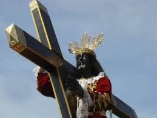

Quiapo Church, officially known as the Minor Basilica of the Black Nazarene, is one of Manila's most iconic religious sites. Established in 1586, the church has served as a spiritual center for countless devotees and visitors alike. The church is particularly famous for its annual feast day, which celebrates the Black Nazarene, a life-sized statue of Jesus Christ that is believed to perform miracles.

Over the years, Quiapo Church has undergone several renovations due to earthquakes and fires. Despite these challenges, the church remains a symbol of faith and devotion, attracting millions of pilgrims each year who seek solace and spiritual guidance. Its vibrant atmosphere, especially during religious events, encapsulates the essence of Filipino spirituality.